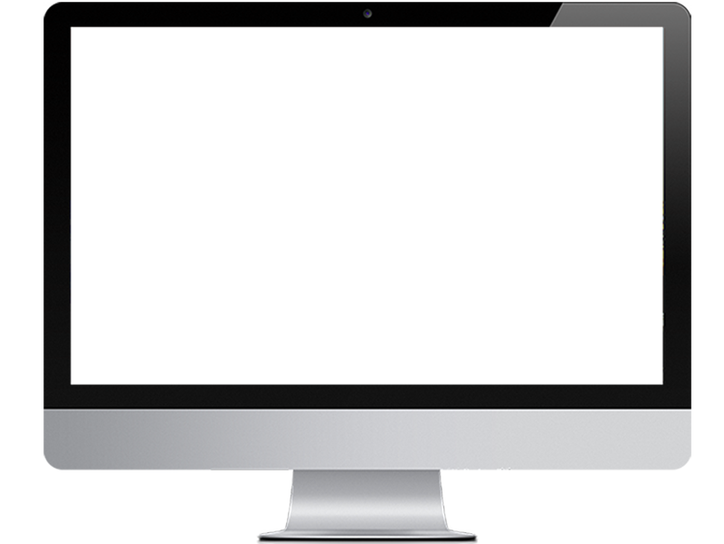
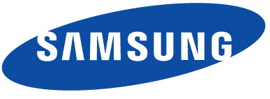
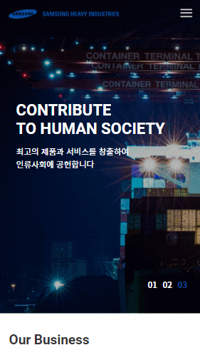
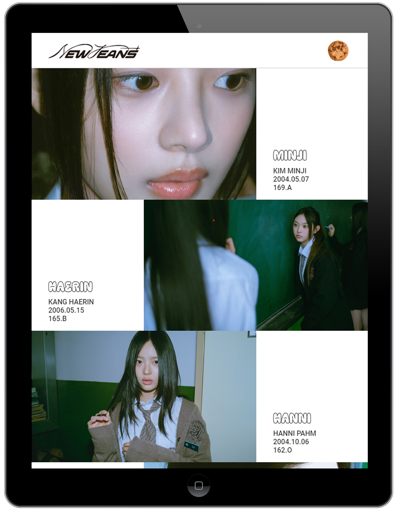
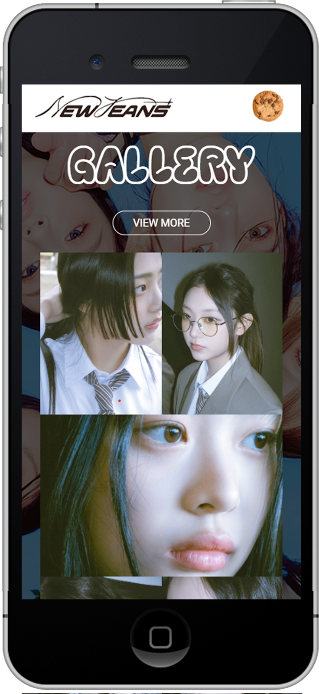
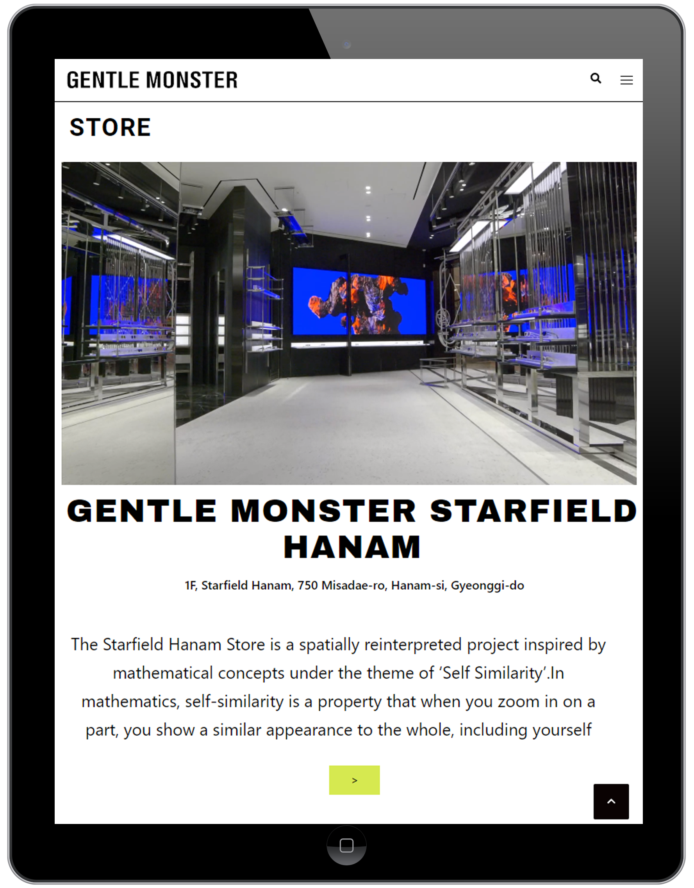
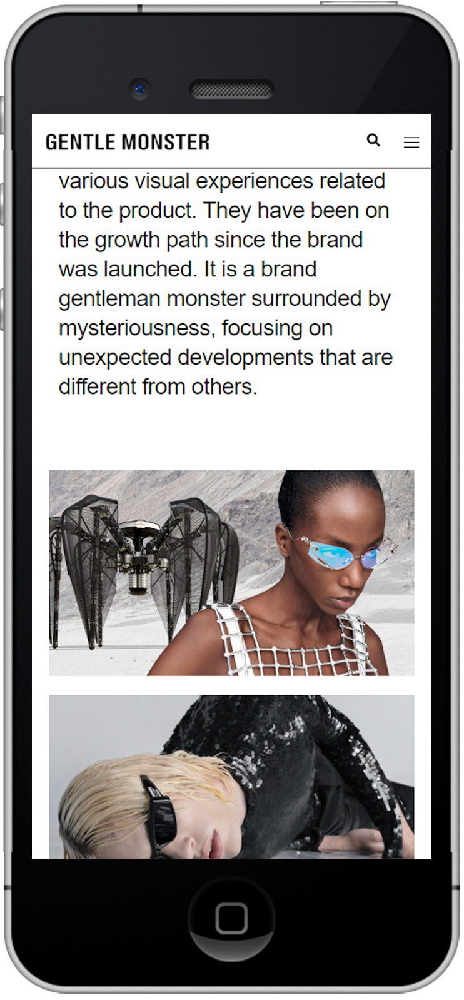
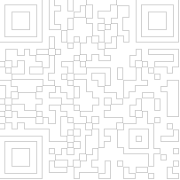

본문컨텐츠영역
HOME
This is
PORTFOLIO
WEB PUBLISHER & WEB DESIGNER
KIM JU HEE
PROFILE
JUHEE KIM
-
- INFO
- 김주희 / 1998.10.14
-
- CONTACT
- 010.2569.9725 / juj2569@naver.com
-
- SKILL
- HTML5, CSS3(SASS, LESS), JavaScript, jQuery, 비동기처리(AJAX/JSON), 반응형 Framework(Bootstrap), CMS(WordPress), PHP, MySQL, Github, Adobe Photoshop, illustrator, Premiere pro
PC - 삼성중공업 기업형PC 웹사이트 제작
기업형 PC 삼성중공업
SAMSUNG HEAVY INDUSTRIES



기존 웹사이트의 헤딩 태그 부재, 이미지 태그 ALT설명 부족, FLASH 사용으로 웹 접근성 문제가 있다고 파악하여, 웹 접근성과 웹 표준 향상에 초점을 두고 새롭게 구축하였습니다.
VISIT SITE- 제작기간
- 2023.03.01 ~ 2023.03.31 (약 4주)
- 제작스킬
- HTML5, CSS3, JavaScript, jQuery, AJAX, PHP, MySql, Adobe Photoshop, illustrator, W3C 웹표준 통합 마크업 검사(html/css), 웹접근성검사(K-WAH), 크로스브라우징 완료
- 폰트 및 컬러
- Roboto Noto Sans KR
모바일 - 삼성중공업 기업형 모바일 웹사이트 제작
기업형 MOBILE 삼성중공업
SAMSUNG HEAVY INDUSTRIES


PC용으로 구현된 기업형 삼성중공업 웹사이트를 다양한 모바일 기기에 적합한 UI를 적용하여 새롭게 구현한 모바일용 웹입니다. 마우스가 아닌 사용자의 터치 이벤트를 중점적으로 제작하였습니다.
VISIT SITE- 제작기간
- 2023.04.01 ~ 2023.04.07 (약 1주)
- 제작스킬
- HTML5, CSS3, JavaScript, jQuery, AJAX, PHP, MySql, Adobe Photoshop, illustrator, W3C 웹표준 통합 마크업 검사(html/css), 웹접근성검사(K-WAH), 크로스브라우징 완료
- 폰트 및 컬러
- Lato Noto Sans KR
반응형 - 뉴진스 반응형 웹사이트 제작
반응형 웹 뉴진스
NEW JEANS



아이돌 뉴진스를 주제로 다양한 디바이스 해상도에 따라 변하는 반응형 사이트로 뉴진스의 분위기와 이미지를 고려하여 시각적인 부분을 강조하여 제작했습니다.
VISIT SITE- 제작기간
- 2023.04.01 ~ 2023.04.07 (약 1주)
- 제작스킬
- HTML5, CSS3, JavaScript, jQuery, AJAX, PHP, MySql, Adobe Photoshop, illustrator, W3C 웹표준 통합 마크업 검사(html/css), 웹접근성검사(K-WAH), 크로스브라우징 완료
- 폰트 및 컬러
- Lato Noto Sans KR
WORDPRESS - GENTLE MONSTER 반응형 웹사이트 제작
워드프레스
GENTLE MONSTER




오픈소스 CMS 중 가장 많이 쓰이는 워드프레스의 테마와 플러그인을 사용하여 젠틀몬스터를 주제로 한 웹사이트를 구현했습니다.
VISIT SITE- 제작기간
- 2023.04.01 ~ 2023.04.07 (약 1주)
- 제작스킬
- HTML5, CSS3, JavaScript, jQuery, AJAX, PHP, MySql, Adobe Photoshop, illustrator, W3C 웹표준 통합 마크업 검사(html/css), 웹접근성검사(K-WAH), 크로스브라우징 완료
- 폰트 및 컬러
- Lato Noto Sans KR
WORDPRESS - GENTLE MONSTER 반응형 웹사이트 제작
워드프레스
GENTLE MONSTER
오픈소스 CMS 중 가장 많이 쓰이는 워드프레스의 테마와 플러그인을 사용하여 젠틀몬스터를 주제로 한 웹사이트를 구현했습니다.
VISIT SITE- 제작기간
- 2023.04.01 ~ 2023.04.07 (약 1주)
- 제작스킬
- HTML5, CSS3, JavaScript, jQuery, AJAX, PHP, MySql, Adobe Photoshop, illustrator, W3C 웹표준 통합 마크업 검사(html/css), 웹접근성검사(K-WAH), 크로스브라우징 완료
- 폰트 및 컬러
- Lato Noto Sans KR